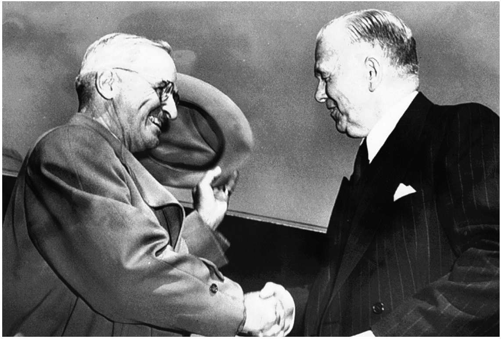

跟随这些和约而来的是东西方之间日益增长的分歧。在很大程度上，这也可用德意志帝国和日本帝国崩溃后在欧洲和亚洲出现的巨大权力真空来予以解释。这些真空要求对权力关系进行某些根本性的再调整。即便在最好的情况下，这样的再调整也是很难安排的，正如拿破仑战争和第一次世界大战之后的危机所表明的那样。第二次世界大战后，由于在传统的权力斗争中新增了意识形态议题，再调整的进程也就变得更加复杂和危险。冷战日益逼近，最戏剧性的表现是1947年3月杜鲁门总统对希腊内战的干预。共产党领导的游击队前一年秋天就已在希腊北部山区出现。重新爆发内战的一个原因是经济状况太糟，使得许多穷困的农民加入了起义者的队伍。另一个原因是国际形势日益恶化，使苏联集团鼓动和援助游击队反对英国支持的雅典政府。
这些情况使起义获得了想当可观的民众支持，起义从北部山区蔓延到伯罗奔尼撒半岛和一些较大的岛屿。镇压起义似乎难以行得通，因此，希腊面临着长期内战的前景，并可能导致共产党最终获胜。杜鲁门总统面对这一紧急情况，宣布了以他的名字命名的原则。他说“希腊的存在如今正受到威胁”，他要求国会拨出4亿美元援助希腊和土耳其。这样，英国也就交出了它在希腊维持了一个世纪的首要地位，而美国则负起了阻止共产党在东地中海地区扩大其影响的责任。

图292 哈里·杜鲁门总统欢迎国务卿乔治·马歇尔从欧洲归来。杜鲁门和马歇尔是冷战初期美国外交政策的设计师。
事实证明，这一任务远比预料中的还要昂贵。1947年3月至1949年6月间，美国为军事目的花费了近4亿美元，为经济援助花费了3亿美元。尽管援助如此慷慨，但1947年和1948年的战役都是无功而返。1949年，胜利的天平决定性地倾向了雅典政府。铁托与斯大林的分裂使铁托元帅封锁了南斯拉夫边境，阻止向站在斯大林一边的游击队提供任何援助。同时，雅典军队正在接受美国军官的再培训，以开展运动的进攻战，而不是固守主要城市和交通要道。因此，1949年秋，国家军队能将游击队赶出山区据点，并能到达和封锁北部边界。
在经济领域中，与杜鲁门主义对应的是通常被称为马歇尔计划的欧洲复兴计划。这一计划到1951年12月31日终止，总共投入了125亿美元。这一巨大的投资，再加上欧洲的人力物力，使欧洲能够迅速复原，生产和生活标准超过了战前的水平。但是，从东、西方关系这一角度看，马歇尔计划则是走向冷战的最后一步。1949年1月，莫斯科设立了经济互助委员会（莫洛托夫计划），作为马歇尔计划的东方版本。
这样一来，共产主义世界和西方世界的分界线也就被划定了。冷战全面展开了，在随后的5年中，一个又一个危机接踵而来。行动和反制日渐升级，最终形成两大对抗性的军事集团：北大西洋公约组织（1949年4月4日），包括美国、加拿大和西欧国家；华沙条约组织（1955年5月），由苏联及其东欧盟国组成。这样，欧洲也就与德国一样，被冷战一分为二。